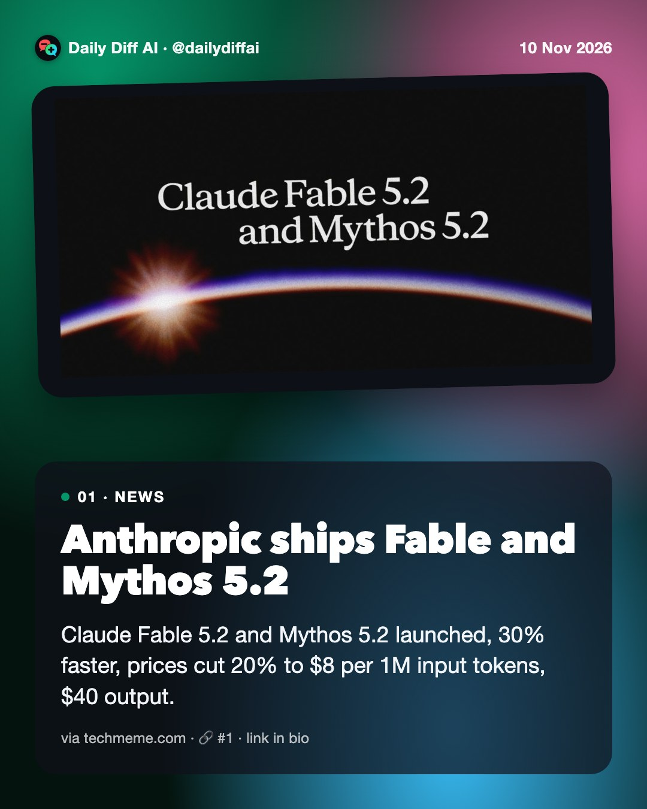
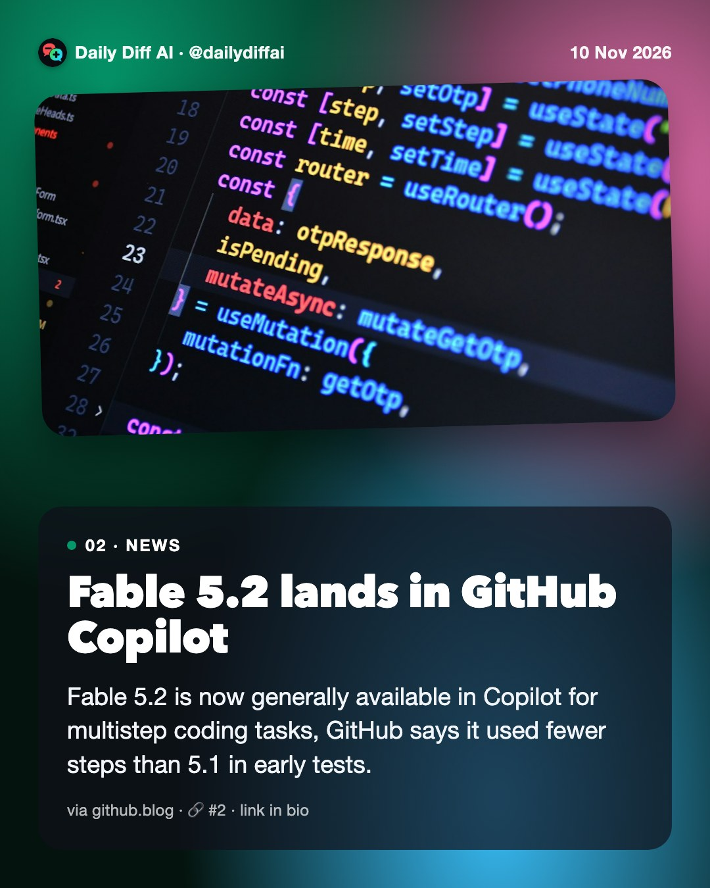
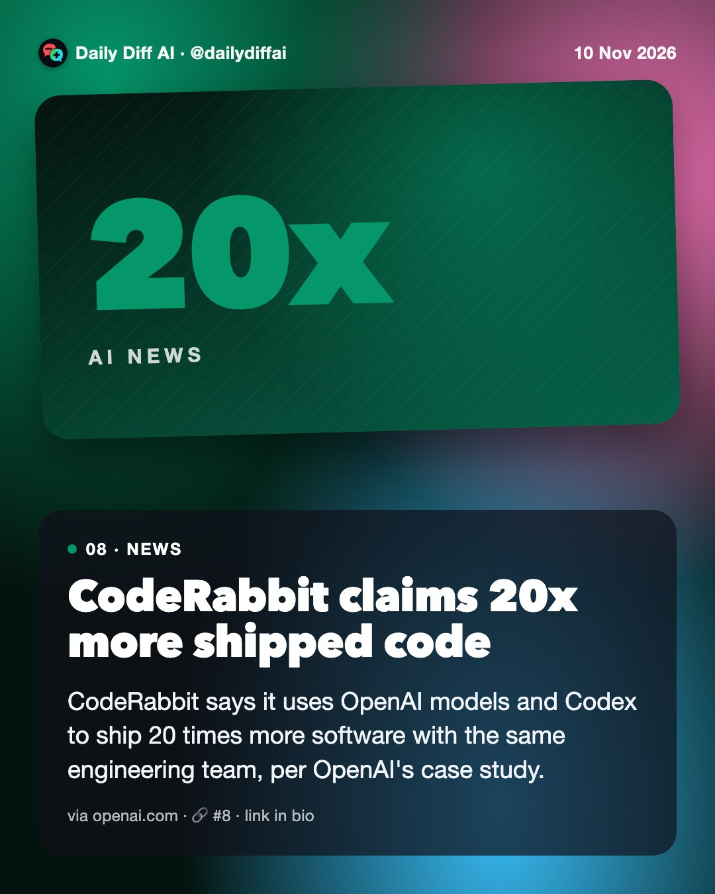

Daily Diff AI

Anthropic ships Fable and Mythos 5.2
Claude Fable 5.2 and Mythos 5.2 launched, 30% faster, prices cut 20% to $8 per 1M input tokens, $40 output.
Read on techmeme.com →
Fable 5.2 lands in GitHub Copilot
Fable 5.2 is now generally available in Copilot for multistep coding tasks, GitHub says it used fewer steps than 5.1 in early tests.
Read on github.blog →Collapse AI reasoning out of your PR summary
Keep PR descriptions to 2-3 human-written sentences on top, fold the agent's full reasoning into a collapsible block below.
Fireworks AI discloses customer data breach
Hackers accessed some customers' datasets, partial model weights, and billing data over about a month, Fireworks says.
Read on techmeme.com →ChatGPT Desktop may forward your SSH keys
A Hacker News report claims ChatGPT Desktop forwards your SSH agent to remote machines, exposing local keys to compromised hosts.
Read on news.ycombinator.com →Gemini now routes your Drive files to humans
Google quietly confirmed connected Drive and Gmail content can reach human reviewers, reversing a 2023 privacy promise.
Read on github.com →GitHub closes a secrets leak gap in Actions
Secret scanning now covers GitHub Actions workflow logs, in public preview, closing a path credentials used to leak through.
Read on github.blog →
CodeRabbit claims 20x more shipped code
CodeRabbit says it uses OpenAI models and Codex to ship 20 times more software with the same engineering team, per OpenAI's case study.
Read on openai.com →